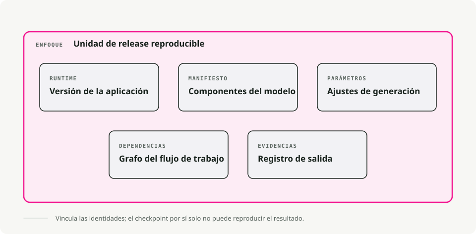
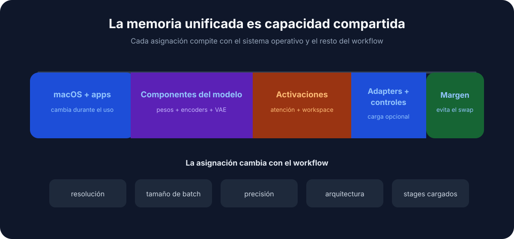
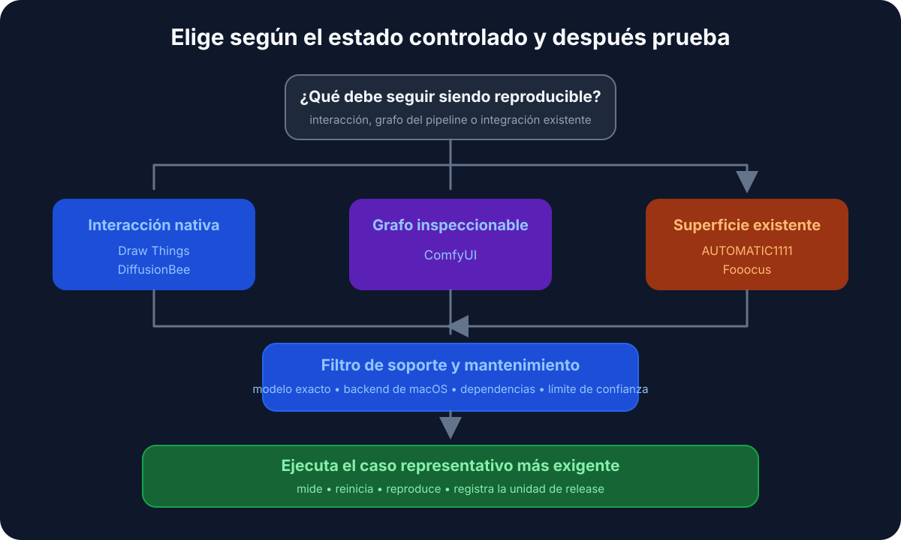

Traducción automática
Este artículo se tradujo automáticamente a partir de la versión original en inglés.
Stable Diffusion en macOS: Draw Things, DiffusionBee, ComfyUI, A1111 y Fooocus
Ejecutar Stable Diffusion en macOS es, sobre todo, una cuestión de elegir herramienta. Un archivo .safetensors son unos cuantos gigabytes de pesos y, una vez te has descargado uno, cualquier app local de Stable Diffusion puede ejecutarlo. Lo que cambia entre aplicaciones es todo lo que envuelve al archivo: la interfaz, las convenciones de flujo de trabajo y cuánto tienes que aprender antes de poder producir una imagen útil.
Así que elegir una es, en gran medida, una decisión de UX, no de modelo. El abanico va desde apps de arrastrar y soltar que puedes usar sin leer nada, hasta grafos de nodos en los que necesitas un fin de semana para sentirte cómodo.
Cómo funcionan las herramientas de Stable Diffusion en macOS
Todas estas aplicaciones hacen el mismo trabajo: poner una interfaz delante de Stable Diffusion. Entre bastidores cargan los pesos del modelo, gestionan la memoria y envían el trabajo a la GPU de tu Mac.

Como comparten la misma arquitectura subyacente, normalmente puedes compartir archivos de modelo (.safetensors) entre ellas. Descarga un modelo una vez y luego pruébalo en varias apps para ver qué flujo de trabajo prefieres.
La ventaja de Apple Silicon
¿Por qué el Mac va tan bien para esto? Memoria unificada. En un PC con una GPU dedicada puede que solo tengas 8GB o 12GB de VRAM. En un Mac, la GPU ve toda la RAM del sistema.

Así que un MacBook Pro con 32GB o 64GB de RAM puede cargar modelos como SDXL o Flux que, sencillamente, no caben en un PC gaming típico.
1. Draw Things - Nativo y optimizado
- Descarga: Enlace a la App Store
Draw Things está creado específicamente para Apple Silicon. Se distribuye como una app nativa de iOS/macOS, sin Python, sin terminal, sin navegador, y exprime Metal más que cualquier otra cosa de esta lista. El conjunto de funciones tampoco está recortado: incluye ControlNet, Inpainting, Outpainting, LoRAs y flujos de trabajo scriptables. La contrapartida es una interfaz densa que intenta meter mucho en una sola pantalla. Escala desde iPhone hasta Mac, y se nota.
2. DiffusionBee - El punto de partida más sencillo
- Descarga: diffusionbee.com
Si quieres generar imágenes en menos de cinco minutos, DiffusionBee es por donde empezar. Descargas el DMG, lo arrastras a Applications y lo ejecutas. No hay ningún paso de “cargar un checkpoint”; eliges un estilo y escribes un prompt. La interfaz es limpia y muy de Apple, con escalado y eliminación de fondo integrados. No vas a sacar de ahí ajustes avanzados de sampler ni pipelines complejos, y las nuevas funciones upstream (como los últimos modelos de ControlNet) tardan más en llegar que en las herramientas más orientadas a quienes les gusta trastear.
3. ComfyUI - El laboratorio basado en nodos
- Descarga: comfy.org
ComfyUI sustituye sliders y campos de texto por un grafo de nodos. Conectas pasos de procesamiento igual que harías en un entorno de programación visual. Un pipeline como “Generar imagen → Escalar → Restaurar cara” vive como un grafo explícito y reutilizable, y solo vuelve a ejecutar los nodos que realmente han cambiado, así que las ejecuciones repetidas suelen ser notablemente más rápidas que en otras interfaces. Miles de nodos personalizados creados por la comunidad lo amplían aún más. La primera vez que lo abrí, el lienzo parecía un plato de espaguetis, y la configuración inicial exige cierta soltura con Python y la terminal.
4. Stable Diffusion WebUI (AUTOMATIC1111)
- Guía de instalación: Instalación en Apple Silicon
El punto fuerte de A1111 es su ecosistema de extensiones. Cuando aparece una nueva técnica de IA, ya sea un nuevo sampler, un preprocesador de ControlNet o un upscaler, normalmente alguien la empaqueta como una extensión de A1111 en cuestión de días. Además, la mayoría de tutoriales de Stable Diffusion en YouTube también van dirigidos a esta interfaz, así que encontrar ayuda es fácil. Funciona como un panel en el navegador con una pestaña para todo, lo cual es funcional pero recargado, y el uso de memoria suele ser mayor que en ComfyUI o Draw Things.
5. Fooocus - Midjourney, en local
Si has usado Midjourney y te ha gustado la experiencia (escribes un prompt, obtienes una imagen pulida, sin controles que tocar), Fooocus la recrea en local. Oculta las decisiones técnicas detrás de valores por defecto inteligentes, así que la interfaz sigue siendo minimalista y la calidad de salida es alta desde el primer momento. Cuando quieres forzar un aspecto concreto y los valores por defecto van en tu contra, no tienes mucho a lo que recurrir. El rendimiento en Mac también puede quedarse por detrás de NVIDIA, ya que la optimización suele apuntar antes a CUDA.
Tabla comparativa rápida
| Herramienta | Dificultad de instalación | Estilo de interfaz | Mejor para |
|---|---|---|---|
| Draw Things | ★☆☆☆☆ (App Store) | App nativa (Pro) | El punto óptimo (potencia + facilidad) |
| DiffusionBee | ★☆☆☆☆ (DMG) | App nativa (simple) | Principiantes y uso casual |
| ComfyUI | ★★★☆☆ (Python) | Grafo de nodos | Flujos complejos y automatización |
| A1111 WebUI | ★★★★☆ (Terminal) | Panel en navegador | Extensiones y soporte de la comunidad |
| Fooocus | ★★★☆☆ (Python) | Minimalista | Prompts estilo Midjourney |
Diagrama de decisión
Si todavía dudas, sigue esto:

Consejos prácticos para usuarios de Mac
1. Requisitos del sistema
- La RAM es lo que más importa:
- 8GB: Viable para imágenes básicas de 512x512, pero espera lentitud y cuelgues con modelos más nuevos como SDXL.
- 16GB: El mínimo cómodo. Puedes ejecutar casi todo, incluido SDXL.
- 32GB+: Lo ideal. Puedes mantener varios modelos cargados y hacer multitarea mientras generas.
- Almacenamiento: Los modelos son grandes (de 2GB a 6GB cada uno). Si tu Mac va justo de espacio, compra un SSD externo.
2. Dónde conseguir modelos
El software es solo el runtime. También necesitas modelos.
- Civitai: El mayor hub de la comunidad. Busca “Checkpoints” compatibles con SD 1.5 o SDXL.
- Hugging Face: El “GitHub de la IA”. Más técnico, pero la fuente oficial de los modelos base de Stability AI.
- Tipos de archivo: Prioriza
.safetensors. Evita.ckptcuando puedas, ya que en teoría puede contener código malicioso (raro en la práctica, pero posible).
3. Empieza por lo simple
No intentes instalar ComfyUI el primer día. Empieza con DiffusionBee o Draw Things y hazte una idea de cómo funciona el prompting. Cuando llegues a un límite (“ojalá pudiera controlar la pose de este personaje...” ), entonces mira ControlNet y las herramientas más avanzadas.